Adaptable Pedal Box for FSAE Combustion and Electric Cars
A pedal box built on a single mountable baseplate so the same unit can be fitted to both UIC's combustion and electric Formula SAE cars, designed through brake-geometry calculations, CAD iterations and 2 kN FEA load cases, and demonstrated as a functional prototype that won Best in Show (Mechanical & Industrial) at the UIC Engineering Expo.
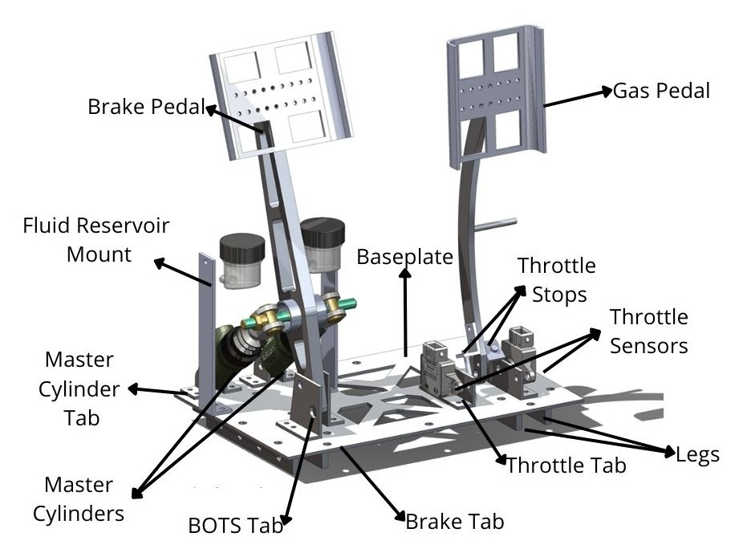
Overview
At a glance
Most SAE Formula pedal boxes are either for combustion cars or electric cars, but there wasn't one that works for both.
Objective
The problem
SAE @ UIC was designing its first electric racecar, with plans to retrofit an EV powertrain into the existing combustion car.
The existing pedal box had insufficient brake pedal stiffness and considerable deformation and torsion in certain sections. As a result, the bias bar assembly bent excessively, causing an undesired increase in braking bias toward the rear wheels, which risks wheel lock-up and loss of control.
Goal: a more robust and structurally sound pedal box that removes the observed deformation, fits in the current frame, and doesn't compromise the frame's integrity.
How it is adaptable
- Both cars use a fixed frame design for the nose, so the same pedal box attaches to either car.
- The whole assembly sits on a single baseplate that can be removed from the combustion car and used again on the electric car. It includes the throttle sensors and uses the same braking for both.
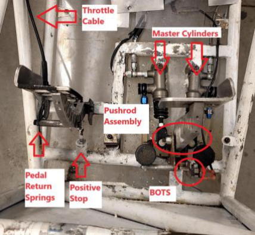
Approach
How it was designed
Requirements and concept selection
- Literature review of prior FSAE pedal boxes (Univ. of Akron, Univ. of Western Macedonia, Univ. of Mumbai, WPI, Tilton).
- Rules self-checked against the FSAE rulebook, including the brake over-travel switch and pedal spacing.
- QFD, objective tree and function-means tree, then four concepts scored in a decision matrix. The selected concept (Option 1) scored 27.6 of 45, ahead of 27.1, 26.3 and 17.7.
- Adjustability was dropped: the frame allows only a 35 mm adjustment range, and the feature would weaken the structure.
Selected brake layout
Pushrod and bias bar above the pedal pivot, with the master cylinders on pivoting mounts. In the sketch, A and D are hinges that let the pedal and cylinder rotate, B is where the master cylinder attaches, and C is the master cylinder.
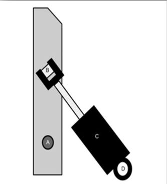
Brake geometry
Force and moment calculations: Nick Whitney
- Pedal ratio 5:1; master cylinder maximum stroke 1.1 inches (27.94 mm).
- Final geometry (pedal shortened by 25.4 mm after the first test fit): Lp = 266.70 mm, Lb = 64.83 mm, Lh = 130.61 mm.
- Calculated reactions at Fmax = 2000 N: master cylinder FMC = 8420.52 N; pivot Ry = 1791.81 N, Rx = 6227.67 N.
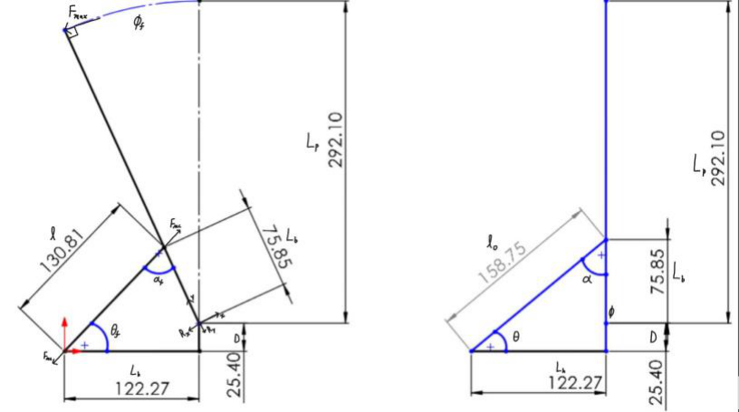
Baseplate and mounting
Majority of the CAD: Vishek · Gas and brake pedal CAD: Jonathan Simon
- Mounting: 4130 steel square tubing, 1" outer diameter and 0.049" wall, welded into the frame. Changing from round to square tubing addresses the torsion issue.
- Four main baseplate iterations (V1–V4), driven mostly by simulations showing stress too high or factor of safety too low, plus dimension and measurement errors.
| Version | Key change | Mass |
|---|---|---|
| V1 | Rectangular plate with welded legs and tabs; aluminum chosen over steel (2.11 lbs vs 6.12 lbs) | 2.11 lbs |
| V2 | Area reduced about 16%; L-shaped plus short legs; 3.175 mm thick | — |
| V3 | Thinner tabs, doubled leg thickness, sloped brake tabs | 2.35 lbs |
| V4 | Fully fastened (no welding), pocketed, wider tab spacing | 2.04 lbs |
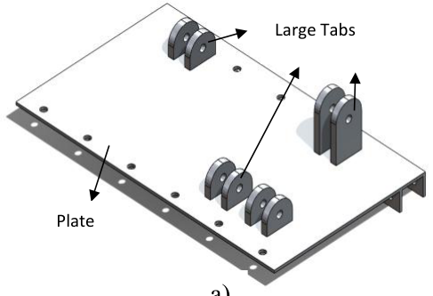
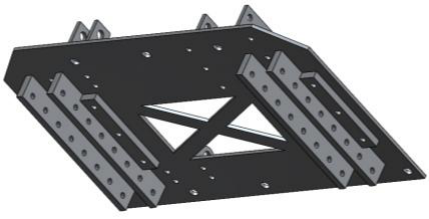
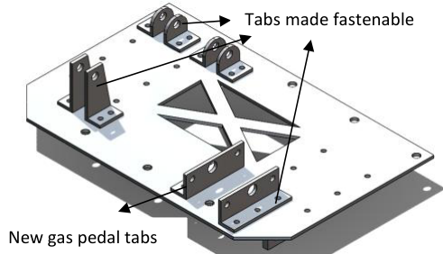
Final components
- Baseplate (V4): fully fastenable, with angle-aluminum tabs and legs screwed to a pocketed 6061-T6 plate; gas pedal tabs enlarged for the throttle sensors.
- BOTS (Brake Over-Travel Switch): mounted below the pivot, in front of the pedal, with a footrest covering it so the driver cannot actuate it by accident.
- Throttle stops: the negative stop is a flat edge on the gas pedal that hits the baseplate; the positive stop is an adjustable bolt in a tapped hole in the baseplate.
- Gas pedal: a curved design for foot clearance, with a support for the return spring and throttle cable.
- Fluid reservoir mounts: sheet-metal holders fastened to the baseplate so they are easy to remove for repair.
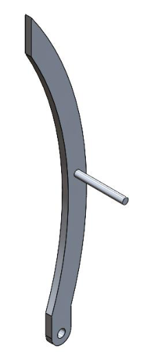
Implementation · Simulation
FEA at the 2 kN load case
All FEA / ANSYS simulations: Pranav Vora · loads from Nick Whitney's calculations
ANSYS static structural analysis with the 2 kN FSAE brake pedal load case (simulated). The values listed are for the final design; Figs. 09–10 show the draft report's iteration 3.
Brake pedal
- Final design ("Pedal V5.3"): max von Mises stress 2.6978×108 Pa; min safety factor 0.96077; max total deformation 0.002402 m.
- Brake pedal iteration 1 showed stress concentration at the sharp corners of the pocketing; later iterations added fillets and a face offset.
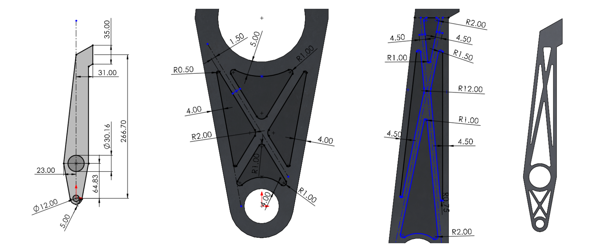
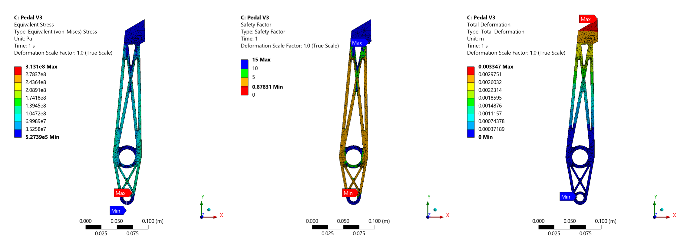
Base plate ("FT1 2kn")
- Max total deformation: 0.030497 in
- Min safety factor: 0.75163
- Both final parts have a minimum safety factor below 1 at the 2 kN rule load (0.75163 and 0.96077). The team's draft argues that a 2 kN input is almost twice what a typical driver is capable of applying (~900 N).
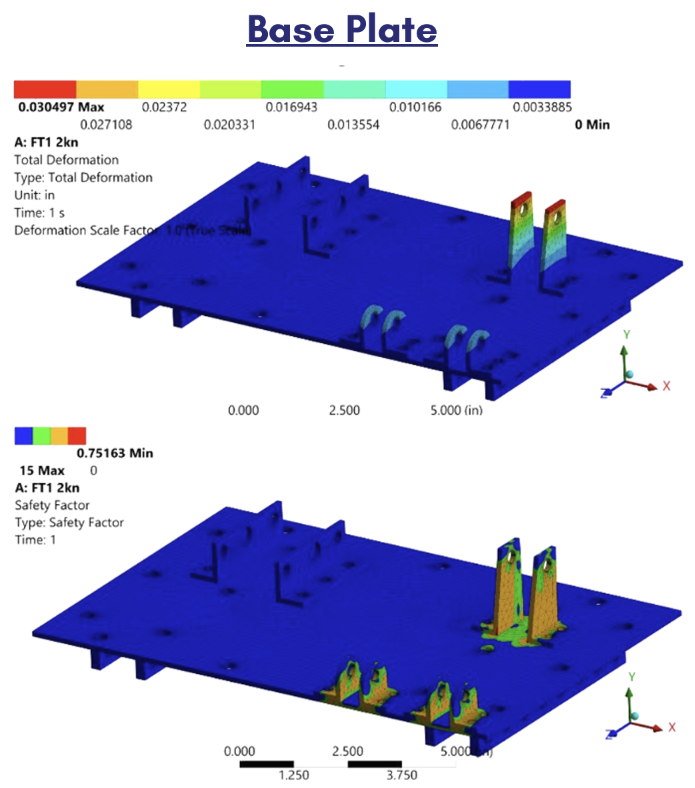
Prototype
Functional prototype in the car frame
All prototyping and assembly: Vishek
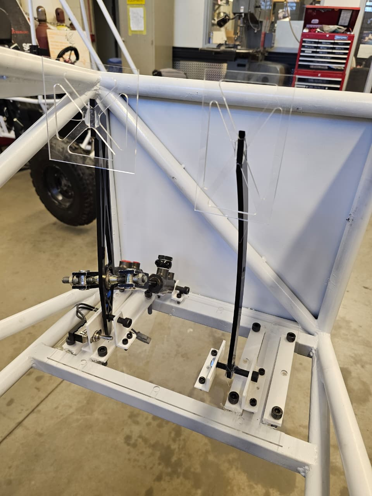

- A functional prototype built from laser-cut acrylic and 3D-printed parts.
- It was test-fitted in the car frame, and the brake over-travel switch was actuated (video).
- Never manufactured in metal.
Results
Outcome
Simulated
- Simulated at the 2 kN FSAE load case; iterated to reduce mass from 304.54 g to 191.25 g.
- Final minimum safety factors: base plate 0.75163, brake pedal 0.96077.
Prototype and packaging
- Functional prototype test-fitted in the car frame, with the brake over-travel switch actuated.
- One unit designed to fit both the combustion and electric cars.
- Rules self-checked against the FSAE rulebook (brake over-travel switch, pedal spacing).
- Test-fit measurement: brake pedal face about 918 mm from the car seat, leaving only 3 mm against the 915 mm requirement. No change was made afterwards.
Recognition
Best in Show, Mechanical and Industrial category, UIC Engineering Expo. Two projects were selected; this was one of them.
Engineering challenges
Challenges and design decisions
- Strength vs. mass: both final parts have a minimum safety factor below 1 at the 2 kN rule load (0.75163 and 0.96077).
- First test fit failed: the vertical footprint of the brake pedal geometry was too large for the frame of the F23, so the pedal was shortened by 25.4 mm.
- Welded to fastened: welding risked distortion, dimensional inaccuracy and skilled labor costs, so the team made the design fully fastenable. A cost comparison found the fastened design more cost effective.
- Material: 6061-T6 aluminum instead of steel, to save weight (steel baseplate about 6.12 lbs vs aluminum 2.11 lbs).
- Brake pedal iteration 1: stress concentration at the sharp corners of the pocketing, and a flat face meant the base of the driver's foot would hit the pedal. Later iterations added fillets and a face offset.
- Gas pedal: iteration 1 was too tall in the car and its offset was not comfortable for drivers, so iteration 2 used a curved shape.
- Adjustability excluded: the 35 mm range was too small and the feature would weaken the structure.
Team
Credits
- Vishek MasaliaMajority of the CAD; all prototyping and assembly.
- Jonathan SimonFSAE rules guidance; CAD of the gas and brake pedals; project coordination.
- Nick WhitneyCoordinated with the brake team; force and moment calculations for the design and the simulations.
- Pranav VoraAll FEA / ANSYS simulations.
UIC Mechanical & Industrial Engineering senior design. Faculty advisor: Dr. Jonathan Komperda.